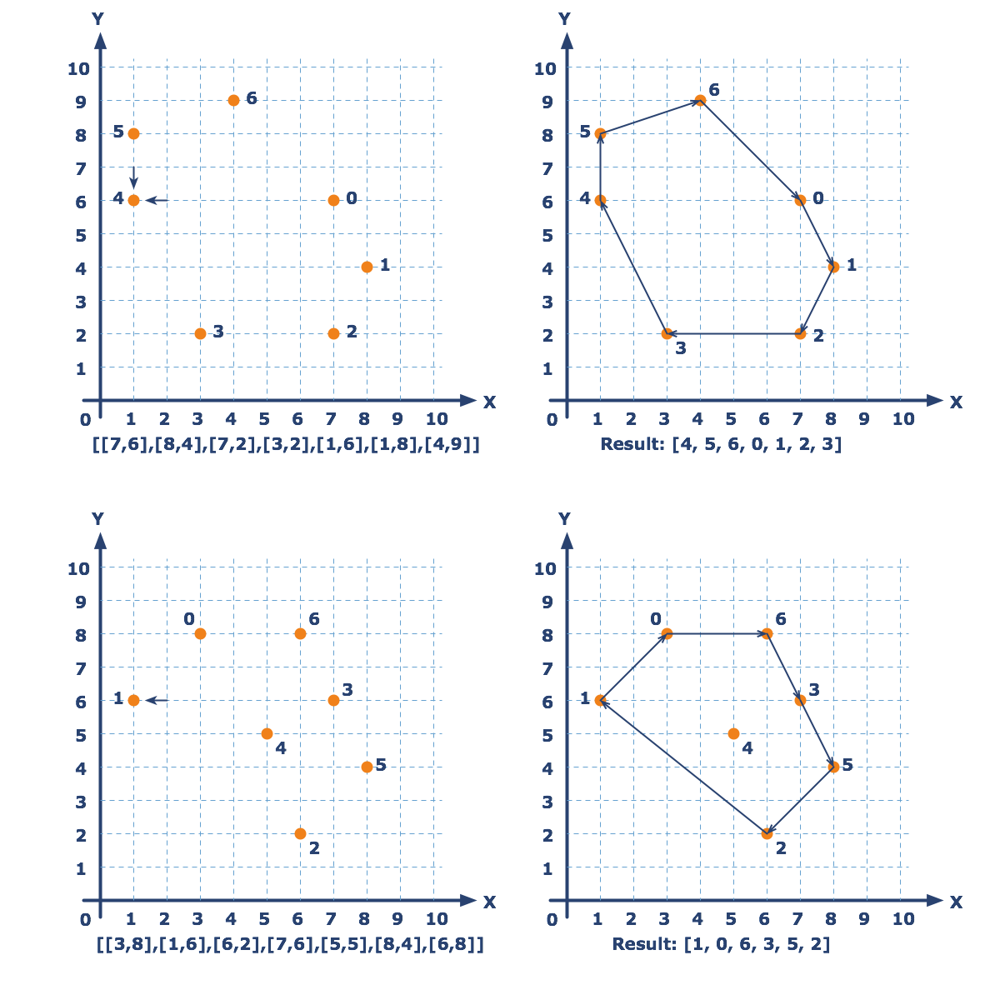

Convex Hull¶
You are given a list of points on a coordinate plane. We need you find the convex hull formed by these points. The convex hull of a set X of points in the Euclidean plane is the smallest convex set that contains X. For instance: when X is a bounded subset of the plane, the convex hull may be visualized as the shape formed by a rubber band stretched around X. If a point lies on edge, it’s included.
The points are presented as a list of coordinates [x, y] in which x and y are integers. The result returns as a sequence of indexes of points in the given list; points lie on the convex hull in clockwise order (see the picture). The sequence starts from the bottom leftmost point. Remember: You should return a list of indexes–not the points themselves.
Input: A list of coordinates. Each coordinate is a list of two integers.
Output: The list of indexes of coordinates from the given list.
Example:
checkio([[7, 6], [8, 4], [7, 2], [3, 2], [1, 6], [1, 8], [4, 9]]) == [4, 5, 6, 0, 1, 2, 3]
checkio([[3, 8], [1, 6], [6, 2], [7, 6], [5, 5], [8, 4], [6, 8]]) == [1, 0, 6, 3, 5, 2]
Precondition:
2 < len(coordinates) < 10all(0 < x < 10 and 0 < x < 10 for x, y in coordinates)
Solution:
def angle(x, y):
return round(x / (x**2 + y**2) ** 0.5, 8)
def clockwise(p1, p2, p3):
return (p2[0] - p1[0]) * (p3[1] - p1[1]) < (p2[1] - p1[1]) * (p3[0] - p1[0])
def checkio(data):
data = map(tuple, data)
start = sorted(data)[0]
idxmap = dict(zip(data, range(len(data))))
xb, yb = sorted(data, key = lambda (x,y): (y,x))[0]
data.remove((xb, yb))
data = sorted(data, key = lambda (x,y): (angle(x-xb, y-yb), xb-x))
convex_hull = [(xb, yb)]
while data:
p = data.pop()
if len(convex_hull) > 1:
while clockwise(convex_hull[1], convex_hull[0], p):
del convex_hull[0]
convex_hull = [p] + convex_hull
i = convex_hull.index(start)
convex_hull = convex_hull[i:] + convex_hull[:i]
return [idxmap[p] for p in convex_hull]